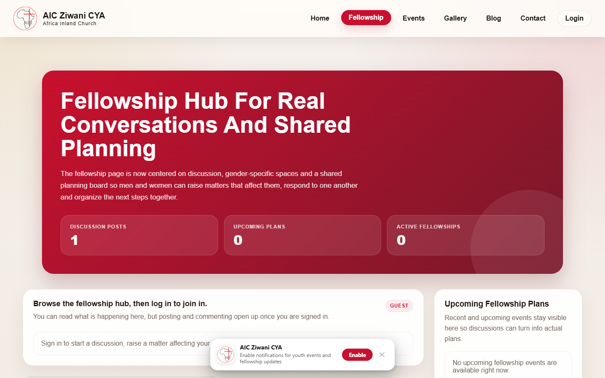
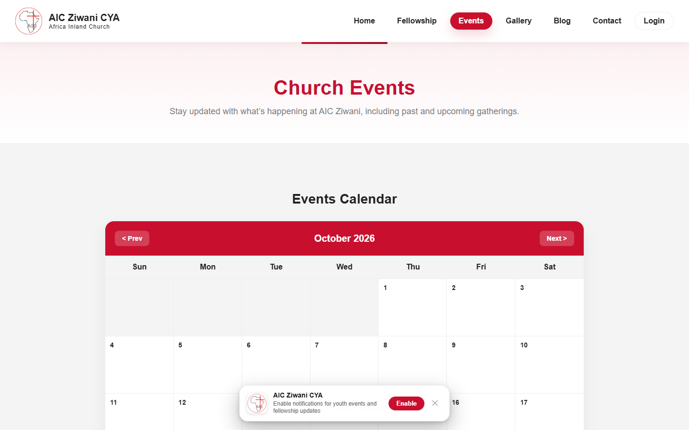

AIC Ziwani CYA — Youth Ministry Portal
A complete digital fellowship and community portal engineered for AIC Ziwani youth ministry. Bringing member profiles, event calendar countdowns, fellowship directories, and ministry resources into an intuitive digital experience.
Portal Home & Mobile First
A modern digital hub built to replace fragmented group chats and flyers, providing members with immediate access to weekly sermons, youth announcements, and leadership profiles.
- > Youth members can securely access announcements and weekly sermon materials anytime from web or mobile browsers.
- > Responsive architecture optimized for instant loading on cellular mobile networks.
- > Integrated Google authentication and member profile onboarding.

Fellowship Directory
Connecting youths into home cell fellowships, ministry teams, and youth departments across Nairobi with clear meeting locations and leader contact points.
- > Browse cell groups by geographical location, ministry focus, and schedule.
- > Direct inquiry channels to join praise & worship, media, hospitality, and outreach teams.
- > Dynamic leader profiles with bio cards and contact links.

Events & Live Countdowns
Keeps the congregation energized with dynamic schedules, recurring service announcements, youth camps, and registration links.
- > Automated countdown clocks ticking toward upcoming conferences and retreats.
- > Location pins, event themes, guest speaker highlights, and timetable breakdowns.
- > Interactive prayer request submission system for private ministry care.

Project Overview & Goals
AIC Ziwani CYA was built to modernize church youth ministry operations, connect members across Nairobi, and provide a single digital touchpoint for weekly programs, prayer requests, fellowships, and upcoming conferences.
The platform eliminates scattered WhatsApp flyers by offering a real-time events calendar with countdown timers, dynamic speaker profiles, Google authentication for verified community access, and full cross-device responsiveness.